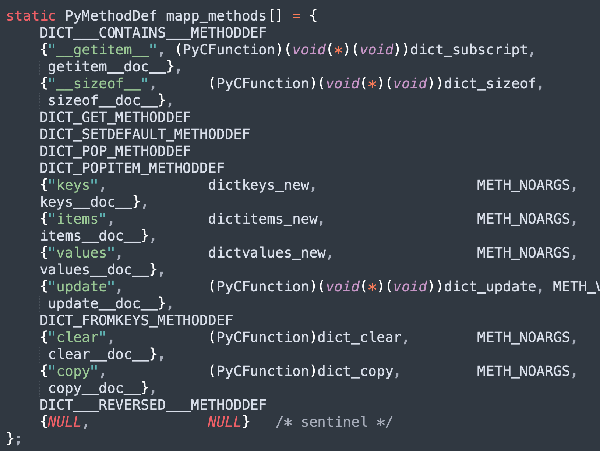
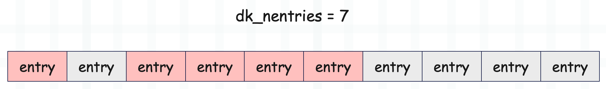
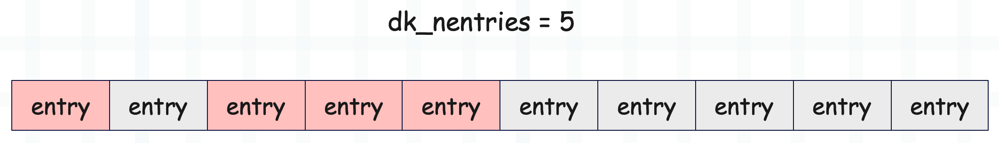

楔子
上一篇文章我们介绍了字典的创建过程，和一些基本操作，这些操作都对应一个魔法方法。但除了这些魔法方法之外，每个对象还可以单独定义很多自己的方法，这些方法统一由类型对象的 tp_methods 字段维护，当然这些之前已经说过了。

里面有很多的自定义方法，比如 get、pop、setdefault 等等，我们来剖析一下。
字典的 get 方法
获取指定 key 对应的 value，如果 key 不存在，那么返回默认值。
d = {"name": "古明地觉"}
print(d.get("name"))
"""
古明地觉
"""
# key 不存在，返回默认值 None
print(d.get("desc"))
"""
None
"""
# 当然也可以指定默认值
print(d.get("desc", "地灵殿美少女"))
"""
地灵殿美少女
"""
下面看一下源码实现。
// Objects/clinc/dictobject.c.h
#define DICT_GET_METHODDEF \
{"get", (PyCFunction)(void(*)(void))dict_get, METH_FASTCALL, dict_get__doc__},
static PyObject *
dict_get(PyDictObject *self, PyObject *const *args, Py_ssize_t nargs)
{
PyObject *return_value = NULL; // 返回值
PyObject *key; // 指定的 key
PyObject *default_value = Py_None; // 默认值，默认为 None
// get 方法接收 1 ~ 2 个参数
if (!_PyArg_CheckPositional("get", nargs, 1, 2)) {
goto exit;
}
// args[0] 便是指定的 key
key = args[0];
if (nargs < 2) {
goto skip_optional;
}
// args[1] 便是传入的默认值，如果有的话
default_value = args[1];
skip_optional:
// 调用 dict_get_impl
return_value = dict_get_impl(self, key, default_value);
exit:
return return_value;
}
// Objects/dictobject.c
static PyObject *
dict_get_impl(PyDictObject *self, PyObject *key, PyObject *default_value)
{
PyObject *val = NULL;
Py_hash_t hash; // 哈希值
Py_ssize_t ix; // 哈希槽存储的键值对数组的索引
// 计算哈希值
if (!PyUnicode_CheckExact(key) ||
(hash = ((PyASCIIObject *) key)->hash) == -1) {
hash = PyObject_Hash(key);
if (hash == -1)
return NULL;
}
// 获取 key 对应的哈希槽存储的键值对数组的索引
ix = (self->ma_keys->dk_lookup) (self, key, hash, &val);
if (ix == DKIX_ERROR)
return NULL;
// key 不存在，那么将默认值赋值给 val
if (ix == DKIX_EMPTY || val == NULL) {
val = default_value;
}
// 增加 val 的引用计数，然后返回
Py_INCREF(val);
return val;
}
以上就是字典的 get 方法，非常简单。
字典的 setdefault 方法
这是一个非常强大的方法，但是用的人不是很多。它和 get 方法类似，都是传入一个 key 和一个默认值，如果 key 存在，那么返回 key 对应的 value，否则返回默认值。但它和 get 方法不同的是，setdefault 在 key 不存在时，会将 key 和默认值添加到字典中。
d = {"name": "古明地觉"}
# 当 key 存在时，两个方法的效果是一样的，都等价于 d[key]
print(d.get("name"))
print(d.setdefault("name"))
"""
古明地觉
古明地觉
"""
# 但当 key 不存在时，就有差别了
# "desc" 这个 key 不存在，返回默认值
print(d.get("desc", "地灵殿美少女"))
"""
地灵殿美少女
"""
# 并且原始的字典不受影响
print(d)
"""
{'name': '古明地觉'}
"""
# 但对于 setdefault 来说，key 不存在时
# 会将 key 和默认值添加进去，然后返回默认值
print(d.setdefault("desc", "地灵殿美少女"))
"""
地灵殿美少女
"""
# 原始的字典会发生改变
print(d)
"""
{'name': '古明地觉', 'desc': '地灵殿美少女'}
"""
所以当获取的 key 不存在时，v = d.setdefault(key, value) 等价于如下。
- d[key] = value
- v = d[key]
那么 setdefault 一般用在什么地方呢？举个例子。
data = [
("古明地觉", "2020", 5), ("古明地觉", "2020", 2),
("古明地觉", "2021", 1), ("古明地觉", "2021", 4), ("古明地觉", "2021", 3),
("芙兰朵露", "2022", 7), ("芙兰朵露", "2022", 3), ("芙兰朵露", "2022", 3),
("芙兰朵露", "2023", 4), ("芙兰朵露", "2023", 1)
]
# 对于上面这种数据，我们需要变成下面这个样子
"""
{
'古明地觉': {
'2020': [5, 2],
'2021': [1, 4, 3]
},
'芙兰朵露': {
'2022': [7, 3, 3],
'2023': [4, 1]
}
}
"""
# 如果使用 setdefault 方法，就非常好解决了
d = {}
for name, year, cnt in data:
d.setdefault(name, {}).setdefault(year, []).append(cnt)
print(d)
下面来看一下源码实现。
// Objects/clinc/dictobject.c.h
#define DICT_SETDEFAULT_METHODDEF \
{"setdefault", (PyCFunction)(void(*)(void))dict_setdefault, METH_FASTCALL, dict_setdefault__doc__},
static PyObject *
dict_setdefault(PyDictObject *self, PyObject *const *args, Py_ssize_t nargs)
{
// 这部分和 get 方法是类似的
PyObject *return_value = NULL;
PyObject *key;
PyObject *default_value = Py_None;
if (!_PyArg_CheckPositional("setdefault", nargs, 1, 2)) {
goto exit;
}
key = args[0];
if (nargs < 2) {
goto skip_optional;
}
default_value = args[1];
skip_optional:
return_value = dict_setdefault_impl(self, key, default_value);
exit:
return return_value;
}
// Objects/dictobject.c
static PyObject *
dict_setdefault_impl(PyDictObject *self, PyObject *key,
PyObject *default_value)
{
PyObject *val;
val = PyDict_SetDefault((PyObject *)self, key, default_value);
Py_XINCREF(val);
return val;
}
所以核心在于 PyDict_SetDefault 函数，这个函数比较长，但逻辑不难理解。
// Objects/dictobject.c
PyObject *
PyDict_SetDefault(PyObject *d, PyObject *key, PyObject *defaultobj)
{
PyDictObject *mp = (PyDictObject *)d;
PyObject *value;
Py_hash_t hash;
if (!PyDict_Check(d)) {
PyErr_BadInternalCall();
return NULL;
}
// 获取哈希值
if (!PyUnicode_CheckExact(key) ||
(hash = ((PyASCIIObject *) key)->hash) == -1) {
hash = PyObject_Hash(key);
if (hash == -1)
return NULL;
}
// 如果 mp->ma_keys 等于 Py_EMPTY_KEYS，证明字典是空的，那么 key 肯定不存在
// 将 key 和 defaultobj 添加进字典中，并返回 defaultobj
if (mp->ma_keys == Py_EMPTY_KEYS) {
if (insert_to_emptydict(mp, key, hash, defaultobj) < 0) {
return NULL;
}
return defaultobj;
}
// 如果字典使用的是分离表，并且 key 不是字符串
// 意味着字典的结构要发生改变，重构为结合表
if (mp->ma_values != NULL && !PyUnicode_CheckExact(key)) {
if (insertion_resize(mp) < 0)
return NULL;
}
// 获取哈希槽存储的键值对数组的索引
Py_ssize_t ix = (mp->ma_keys->dk_lookup)(mp, key, hash, &value);
if (ix == DKIX_ERROR)
return NULL;
// 分离表不仅要求 key 全部是字符串，并且不能删除，否则要重构为结合表
if (_PyDict_HasSplitTable(mp) &&
((ix >= 0 && value == NULL && mp->ma_used != ix) ||
(ix == DKIX_EMPTY && mp->ma_used != mp->ma_keys->dk_nentries))) {
if (insertion_resize(mp) < 0) {
return NULL;
}
ix = DKIX_EMPTY;
}
// 如果 ix == -1，说明 key 不存在，那么要先添加键值对
if (ix == DKIX_EMPTY) {
PyDictKeyEntry *ep, *ep0;
value = defaultobj;
// 是否还有可用空间，如果没有，调用 insertion_resize
if (mp->ma_keys->dk_usable <= 0) {
if (insertion_resize(mp) < 0) {
return NULL;
}
}
// 返回 key 映射之后的哈希槽的索引
Py_ssize_t hashpos = find_empty_slot(mp->ma_keys, hash);
// 新添加的 entry 在键值对数组中的索引为 mp->ma_keys->dk_nentries
// 将该索引赋值给 dk_indices[hashpose]
ep0 = DK_ENTRIES(mp->ma_keys);
ep = &ep0[mp->ma_keys->dk_nentries];
dictkeys_set_index(mp->ma_keys, hashpos, mp->ma_keys->dk_nentries);
Py_INCREF(key);
Py_INCREF(value);
MAINTAIN_TRACKING(mp, key, value);
ep->me_key = key;
ep->me_hash = hash;
// 如果字典是分离表
if (_PyDict_HasSplitTable(mp)) {
// 值由 mp->ma_values 存储
assert(mp->ma_values[mp->ma_keys->dk_nentries] == NULL);
mp->ma_values[mp->ma_keys->dk_nentries] = value;
}
// 如果字典是结合表，那么键和值均保存在 entry 中
else {
ep->me_value = value;
}
// 字典长度加 1
mp->ma_used++;
// 修改版本号
mp->ma_version_tag = DICT_NEXT_VERSION();
// 键值对数组还可以容纳的 entry 个数减 1
mp->ma_keys->dk_usable--;
// 键值对数组已经容纳的 entry 个数加 1
mp->ma_keys->dk_nentries++;
assert(mp->ma_keys->dk_usable >= 0);
}
// ...
ASSERT_CONSISTENT(mp);
// 返回 value
return value;
}
以上便是 setdefault 方法。
字典的 popitem 方法
字典的 pop 方法之前已经说过了，这里来看一下 popitem 方法。
d = {"x": 1, "y": 2, "z": 3}
# pop 方法可以弹出指定的 key，并返回对应的 value
# 如果 key 不存在，并且没有指定默认值，会抛出 KeyError，否则返回默认值
print(d.pop("x")) # 1
# 而 popitem 方法则是弹出字典的最后一个键值对
d = {"x": 1, "y": 2, "z": 3}
print(d.popitem()) # ('z', 3)
print(d) # {'x': 1, 'y': 2}
下面看一下源码实现。
// Objects/clinc/dictobject.c.h
#define DICT_POPITEM_METHODDEF \
{"popitem", (PyCFunction)dict_popitem, METH_NOARGS, dict_popitem__doc__},
static PyObject *
dict_popitem(PyDictObject *self, PyObject *Py_UNUSED(ignored))
{
return dict_popitem_impl(self);
}
// Objects/dictobject.c
static PyObject *
dict_popitem_impl(PyDictObject *self)
{
Py_ssize_t i, j;
PyDictKeyEntry *ep0, *ep;
PyObject *res;
// 返回值，一个二元组，负责存储 key 和 value
res = PyTuple_New(2);
if (res == NULL)
return NULL;
// 如果字典的长度为 0，那么抛出 KeyError
if (self->ma_used == 0) {
Py_DECREF(res);
PyErr_SetString(PyExc_KeyError, "popitem(): dictionary is empty");
return NULL;
}
// 如果字典使用分离表，那么当 popitem 之后，要重构为结合表
// 分离表要求 key 必须全部是字符串，并且不能删除键值对
if (self->ma_keys->dk_lookup == lookdict_split) {
if (dictresize(self, DK_SIZE(self->ma_keys))) {
Py_DECREF(res);
return NULL;
}
}
ENSURE_ALLOWS_DELETIONS(self);
// 获取键值对数组
ep0 = DK_ENTRIES(self->ma_keys);
// ma_keys->dk_nentries 表示键值对数组中已使用的 entry 个数
// 那么 entry 的最大索引就是 ma_keys->dk_nentries - 1
i = self->ma_keys->dk_nentries - 1;
// 从 i 开始往前遍历，找到第一个 me_value != NULL 的 entry
// 因为被删除的 entry 依旧会驻留在键值对数组中，但 me_key、me_value 被设置为 NULL
while (i >= 0 && ep0[i].me_value == NULL) {
i--;
}
assert(i >= 0);
// 获取 entry
ep = &ep0[i];
// 基于哈希槽存储的索引，获取哈希槽的索引
j = lookdict_index(self->ma_keys, ep->me_hash, i);
assert(j >= 0);
assert(dictkeys_get_index(self->ma_keys, j) == i);
// 因为 entry 被删除了，所以对应的哈希槽存储的值要修改为 DKIX_DUMMY
dictkeys_set_index(self->ma_keys, j, DKIX_DUMMY);
// 将 key 和 value 保存在元组中
PyTuple_SET_ITEM(res, 0, ep->me_key);
PyTuple_SET_ITEM(res, 1, ep->me_value);
// 因为被弹出了，所以 entry 的 me_key 和 me_value 要重置为 NULL
ep->me_key = NULL;
ep->me_value = NULL;
// 这一步一会儿解释
self->ma_keys->dk_nentries = i;
// 键值对个数减 1
self->ma_used--;
self->ma_version_tag = DICT_NEXT_VERSION();
ASSERT_CONSISTENT(self);
return res;
}
以上就是 popitem 方法，但是里面有一行 self->ma_keys->dk_nentries = i 估计让人有些费解，我们解释一下。
首先当键值对数组的空间申请之后，entry 就已经存在了，初始状态下的 entry 的 me_key 和 me_value 均为 NULL。所以一个被伪删除的 entry 和初始的 entry 是等价的，下面假设有这么一个键值对数组。

对于一个容量为 16 的哈希表，它的键值对数组的长度为 10，由于 dk_nentries = 7，说明键值对数组使用了 7 个 entry。而在之后，第 2 个 entry 和第 7 个 entry 被删除了，一旦删除，那么它的 me_key 和 me_value 会被重置为 NULL，和初始 entry 是等价的。
这时候如果执行 popitem，那么会弹出最后一个 me_value 不为 NULL 的 entry，即没有被伪删除的 entry，对于当前来说就是第 6 个 entry。所以源码中的 i 初始等于 dk_nentries - 1，然后往前遍历，最终会找到索引为 5 的 entry，所以循环之后 i = 5。然后将索引为 5 的 entry 的 me_key 和 me_value 设置为 NULL，因为它被删除了。
注意：这里关键来了，既然变量 i 保存的是最后一个 me_value != NULL 的 entry 的索引，那么当它被删除之后，就意味着从索引 i 开始，后面所有的 entry 都相当于回归到了初始状态，那么直接将 dk_nentries 设置为 i。

由于 dk_nentries 被设置为 i，后续再添加键值对时，就会添加到索引为 i 的位置。对于当前来说，添加键值对时，修改的是 dk_entries[5] 的 me_key 和 me_value，而不是 dk_entries[7] 的 me_key 和 me_value。
所以通过 popitem 方法，被删除的 entry 是有可能实现复用的。
小结
以上我们就简单分析了字典的几个自定义方法，下一篇文章来聊一聊字典的扩容。
欢迎大家关注我的公众号：古明地觉的编程教室。

如果觉得文章对你有所帮助，也可以请作者吃个馒头，Thanks♪(･ω･)ﾉ。